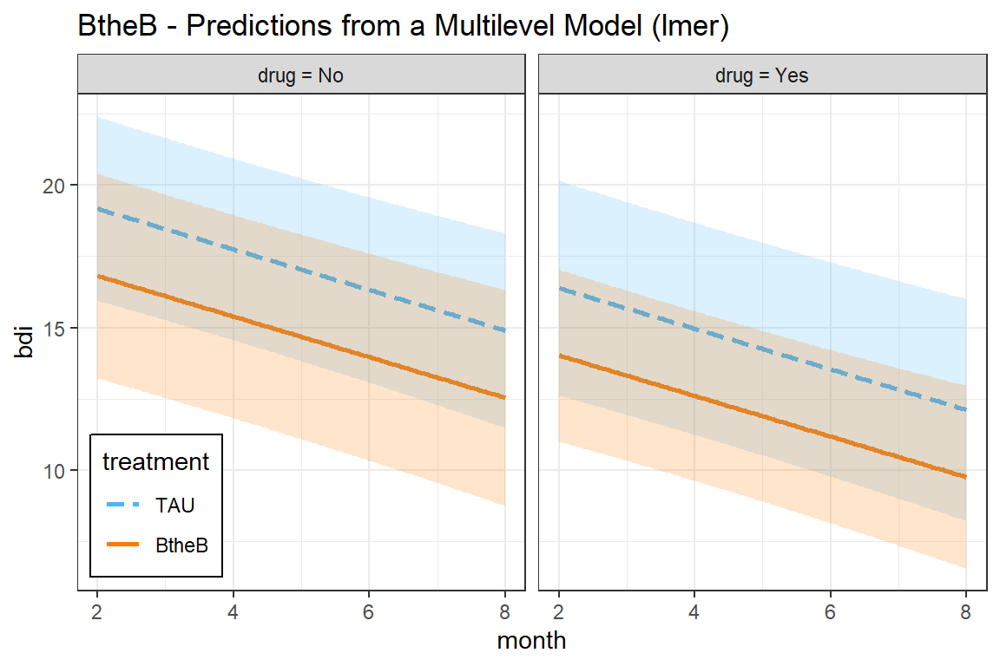
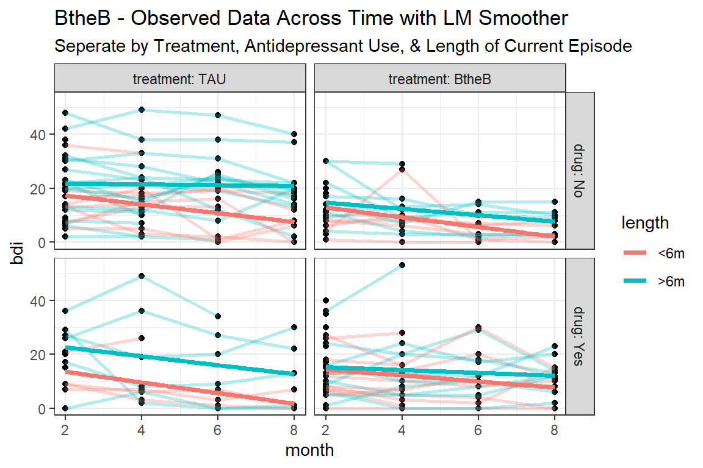
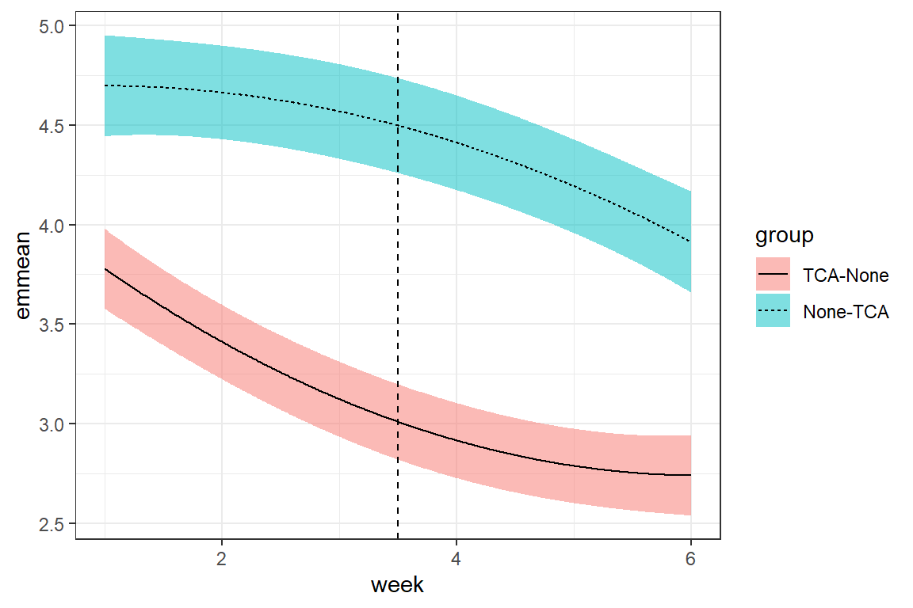
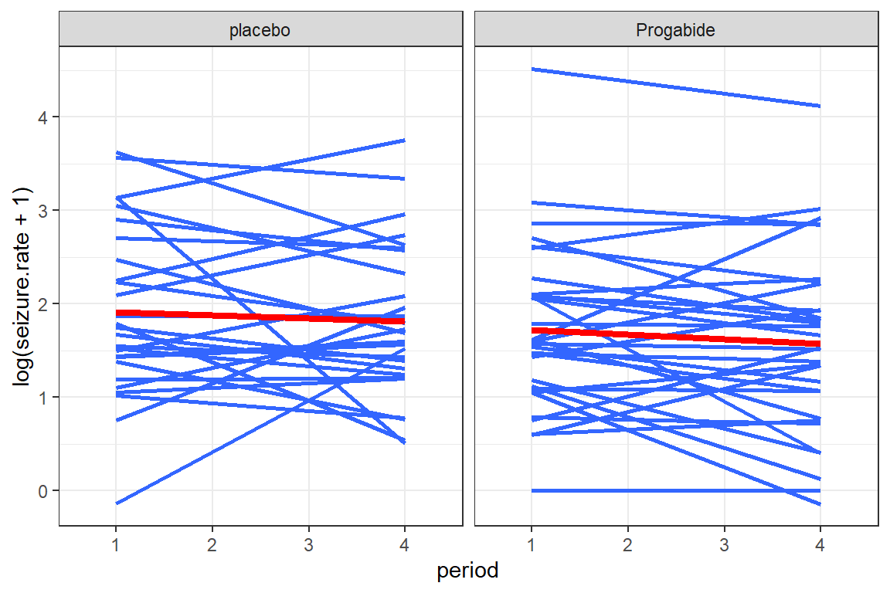
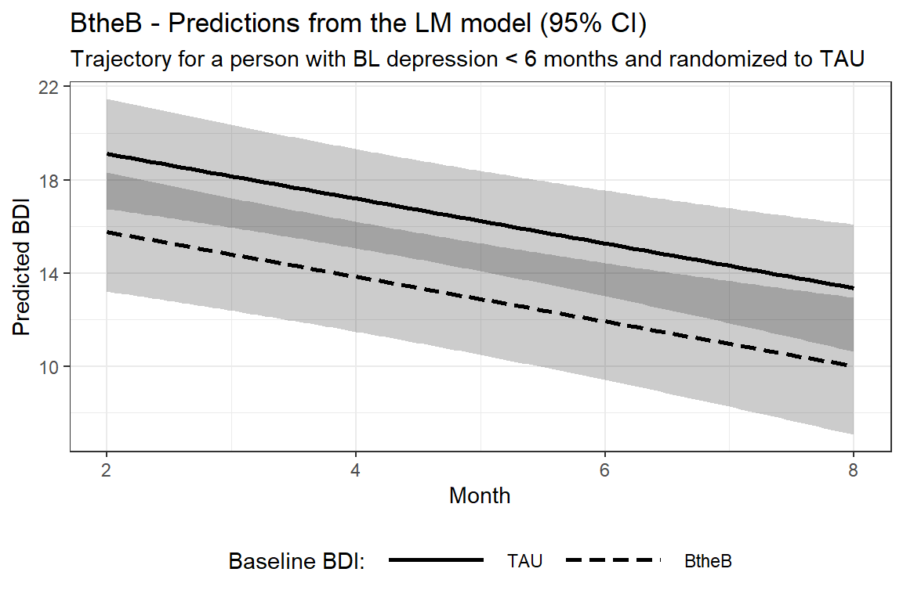
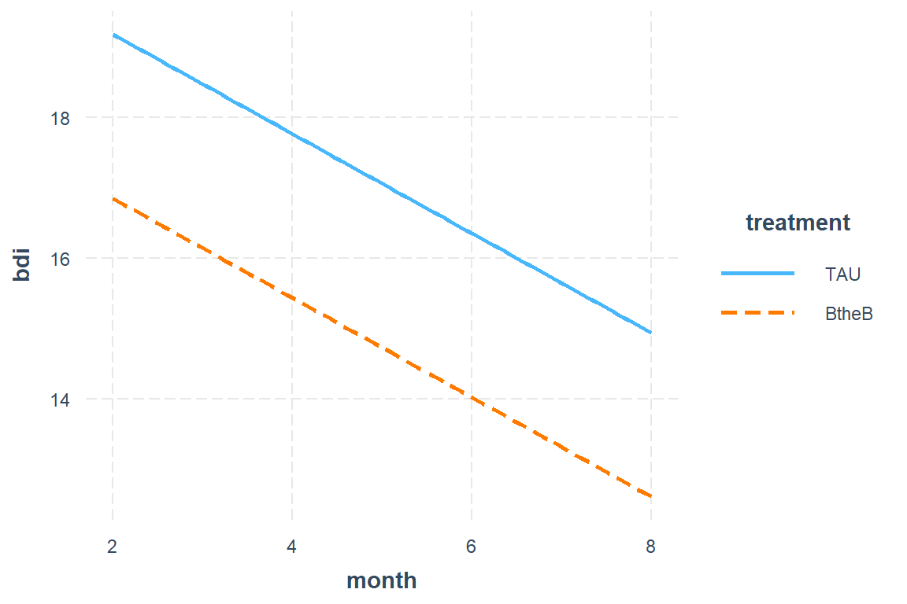
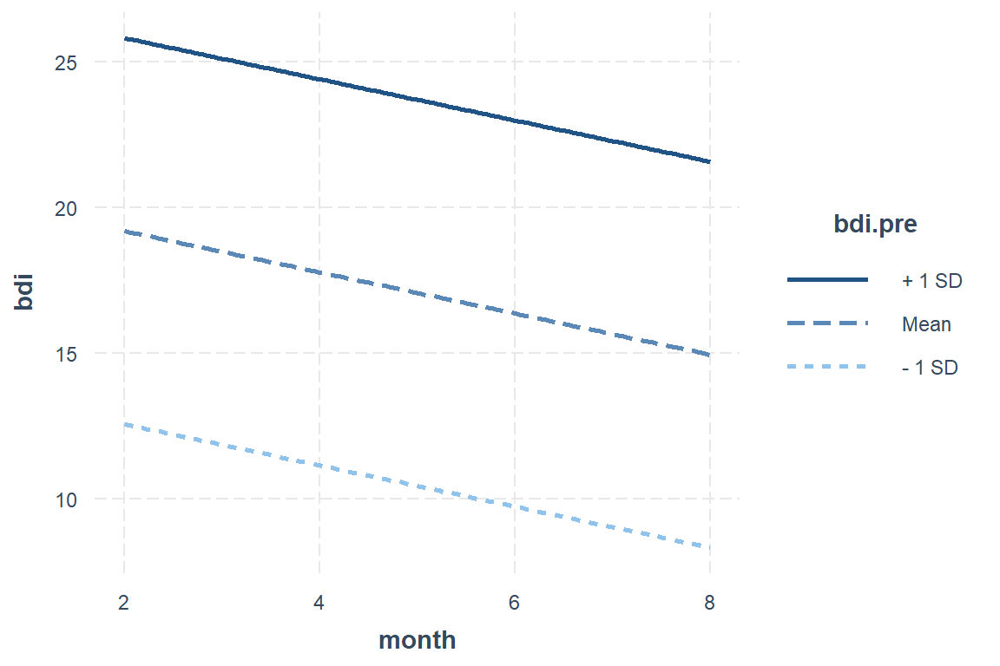

14 GEE, Continuous Outcome: Beat the Blues
14.1 Packages
14.1.1 CRAN
library(tidyverse) # all things tidy
library(pander) # nice looking genderal tabulations
library(furniture) # nice table1() descriptives
library(texreg) # Convert Regression Output to LaTeX or HTML Tables
library(psych) # contains some useful functions, like headTail
library(interactions)
library(performance)
library(lme4) # Linear, generalized linear, & nonlinear mixed models
library(corrplot) # Vizualize correlation matrix
library(gee) # Genderalized Estimation Equation Solver
library(geepack) # Genderalized Estimation Equation Package
library(MuMIn) # Multi-Model Inference (caluclate QIC)
library(HSAUR) # package with the dataset14.2 Background
This dataset was used as an example in Chapter 11 of “A Handbook of Statistical Analysis using R” by Brian S. Everitt and Torsten Hothorn. The authors include this data set in their HSAUR package on
CRAN.
The Background
“These data resulted from a clinical trial of an interactive multimedia program called ‘Beat the Blues’ designed to deliver cognitive behavioral therapy (CBT) to depressed patients via a computer terminal. Full details are given here: Proudfoot et. al (2003), but in essence Beat the Blues is an interactive program using multimedia techniques, in particular video vignettes.”
“In a randomized controlled trial of the program, patients with depression recruited in primary care were randomized to either the Beating the Blues program or to”Treatment as Usual" (TAU). Patients randomized to the BEat the Blues also received pharmacology and/or general practice (GP) support and practical/social help,offered as part of treatment as usual, with the exception of any face-to-face counseling or psychological intervention. Patients allocated to TAU received whatever treatment their GP prescribed. The latter included, besides any medication, discussion of problems with GP, provisions of practical/social help, referral to a counselor, referral to a practice nurse, referral to mental health professionals, or further physical examination.
The Research Question
Net of other factors (use of antidepressants and length of the current episode), does the Beat-the-Blues program results in better depression trajectories over treatment as usual?
The Data
The variables are as follows:
drugdid the patient take anti-depressant drugs (No or Yes)
lengththe length of the current episode of depression, a factor with levels:- “<6m” less than six months
- “>6m” more than six months
- “<6m” less than six months
treatmenttreatment group, a factor with levels:- “TAU” treatment as usual
- “BtheB” Beat the Blues
- “TAU” treatment as usual
bdi.preBeck Depression Inventory II, before treatment
bdi.2mBeck Depression Inventory II, after 2 months
bdi.4mBeck Depression Inventory II, after 4 months
bdi.6mBeck Depression Inventory II, after 6 months
bdi.8mBeck Depression Inventory II, after 8 months
14.2.1 Read in the data
drug length treatment bdi.pre bdi.2m bdi.4m bdi.6m bdi.8m
1 No >6m TAU 29 2 2 <NA> <NA>
2 Yes >6m BtheB 32 16 24 17 20
3 Yes <6m TAU 25 20 <NA> <NA> <NA>
4 No >6m BtheB 21 17 16 10 9
... <NA> <NA> <NA> ... ... ... ... ...
97 Yes <6m TAU 28 <NA> <NA> <NA> <NA>
98 No >6m BtheB 11 22 9 11 11
99 No <6m TAU 13 5 5 0 6
100 Yes <6m TAU 43 <NA> <NA> <NA> <NA>14.2.2 Wide Format
Tidy up the dataset
WIDE format * One line per person * Good for descriptive tables & correlation matrices
btb_wide <- BtheB %>%
dplyr::mutate(id = row_number()) %>% # create a new variable to ID participants
dplyr::select(id, treatment, # specify that ID variable is first
drug, length,
bdi.pre, bdi.2m, bdi.4m, bdi.6m, bdi.8m) id treatment drug length bdi.pre bdi.2m bdi.4m bdi.6m bdi.8m
1 1 TAU No >6m 29 2 2 <NA> <NA>
2 2 BtheB Yes >6m 32 16 24 17 20
3 3 TAU Yes <6m 25 20 <NA> <NA> <NA>
4 4 BtheB No >6m 21 17 16 10 9
5 5 BtheB Yes >6m 26 23 <NA> <NA> <NA>
6 6 BtheB Yes <6m 7 0 0 0 0
7 7 TAU Yes <6m 17 7 7 3 7
8 8 TAU No >6m 20 20 21 19 13
9 9 BtheB Yes <6m 18 13 14 20 11
10 10 BtheB Yes >6m 20 5 5 8 12
... ... <NA> <NA> <NA> ... ... ... ... ...
91 91 TAU No <6m 16 <NA> <NA> <NA> <NA>
92 92 BtheB Yes <6m 30 26 28 <NA> <NA>
93 93 BtheB Yes <6m 17 8 7 12 <NA>
94 94 BtheB No >6m 19 4 3 3 3
95 95 BtheB No >6m 16 11 4 2 3
96 96 BtheB Yes >6m 16 16 10 10 8
97 97 TAU Yes <6m 28 <NA> <NA> <NA> <NA>
98 98 BtheB No >6m 11 22 9 11 11
99 99 TAU No <6m 13 5 5 0 6
100 100 TAU Yes <6m 43 <NA> <NA> <NA> <NA>14.2.3 Long Format
Restructure to long format
LONG FORMAT * One line per observation * Good for plots and modeling
btb_long <- btb_wide %>%
tidyr::pivot_longer(cols = c(bdi.2m, bdi.4m, bdi.6m, bdi.8m), # all existing variables (not quoted)
names_to = "month",
names_pattern = "bdi.(.)m",
values_to = "bdi") %>%
dplyr::mutate(month = as.numeric(month)) %>%
dplyr::filter(complete.cases(id, bdi, treatment, month)) %>%
dplyr::arrange(id, month) %>%
dplyr::select(id, treatment, drug, length, bdi.pre, month, bdi) id treatment drug length bdi.pre month bdi
1 1 TAU No >6m 29 2 2
2 1 TAU No >6m 29 4 2
3 2 BtheB Yes >6m 32 2 16
4 2 BtheB Yes >6m 32 4 24
5 2 BtheB Yes >6m 32 6 17
6 2 BtheB Yes >6m 32 8 20
7 3 TAU Yes <6m 25 2 20
8 4 BtheB No >6m 21 2 17
9 4 BtheB No >6m 21 4 16
10 4 BtheB No >6m 21 6 10
11 ... <NA> <NA> <NA> ... ... ...
12 96 BtheB Yes >6m 16 6 10
13 96 BtheB Yes >6m 16 8 8
14 98 BtheB No >6m 11 2 22
15 98 BtheB No >6m 11 4 9
16 98 BtheB No >6m 11 6 11
17 98 BtheB No >6m 11 8 11
18 99 TAU No <6m 13 2 5
19 99 TAU No <6m 13 4 5
20 99 TAU No <6m 13 6 0
21 99 TAU No <6m 13 8 614.3 Exploratory Data Analysis
14.3.1 Visualize: Person-profile Plots
Create spaghetti plots of the raw, observed data
btb_long %>%
ggplot(aes(x = month,
y = bdi)) +
geom_point() +
geom_line(aes(group = id),
size = 1,
alpha = 0.3) +
geom_smooth(method = "lm") +
theme_bw() +
facet_grid(.~ treatment) +
labs(title = "BtheB - Observed Data Across Time with LM Smoother",
subtitle = "Seperate by Treatment")
btb_long %>%
ggplot(aes(x = month,
y = bdi)) +
geom_point() +
geom_line(aes(group = id),
size = 1,
alpha = 0.3) +
geom_smooth(method = "lm") +
facet_grid(drug~ treatment, labeller = label_both) +
theme_bw() +
labs(title = "BtheB - Observed Data Across Time with LM Smoother",
subtitle = "Seperate by Treatment & Antidepressant Use")
btb_long %>%
ggplot(aes(x = month,
y = bdi)) +
geom_point() +
geom_line(aes(group = id,
color = length),
size = 1,
alpha = 0.3) +
geom_smooth(aes(color = length),
method = "lm",
size = 1.25,
se = FALSE) +
facet_grid(drug~ treatment, labeller = label_both) +
theme_bw() +
labs(title = "BtheB - Observed Data Across Time with LM Smoother",
subtitle = "Seperate by Treatment, Antidepressant Use, & Length of Current Episode")
btb_long %>%
ggplot(aes(x = month,
y = bdi,
color = treatment,
fill = treatment)) +
geom_smooth(method = "lm") +
theme_bw() +
labs(title = "BtheB - Predictions from TWO Seperate Single Simple Linear Models (lm)",
subtitle = "Assumes Independence of Repeated Measures")
14.3.2 Calculate the Observed Correlation Structure
bdi_corr <- btb_wide %>%
dplyr::select(starts_with("bdi")) %>%
stats::cor(use="pairwise.complete.obs")
bdi_corr bdi.pre bdi.2m bdi.4m bdi.6m bdi.8m
bdi.pre 1.0000000 0.6142207 0.5691248 0.5077286 0.3835090
bdi.2m 0.6142207 1.0000000 0.7903346 0.7849188 0.7038158
bdi.4m 0.5691248 0.7903346 1.0000000 0.8166591 0.7220149
bdi.6m 0.5077286 0.7849188 0.8166591 1.0000000 0.8107773
bdi.8m 0.3835090 0.7038158 0.7220149 0.8107773 1.000000014.4 Multiple Regression (OLS)
This ignores any correlation between repeated measures on the same individual and treats all observations as independent.
14.4.1 Fit the models
btb_lm_1 <- stats::lm(bdi ~ bdi.pre + length + drug + treatment + month,
data = btb_long)
btb_lm_2 <- stats::lm(bdi ~ bdi.pre + length + drug + treatment*month,
data = btb_long)
btb_lm_3 <- stats::lm(bdi ~ bdi.pre + length + drug + treatment + drug*month,
data = btb_long)
btb_lm_4 <- stats::lm(bdi ~ bdi.pre + length + drug*treatment*month,
data = btb_long)14.4.2 Parameter Estimates Table
| Model 1 | Model 2 | Model 3 | Model 4 | |
|---|---|---|---|---|
| (Intercept) | 7.88*** | 7.77*** | 7.21*** | 7.33** |
| (1.78) | (2.08) | (2.03) | (2.30) | |
| bdi.pre | 0.57*** | 0.57*** | 0.57*** | 0.56*** |
| (0.05) | (0.05) | (0.05) | (0.05) | |
| length>6m | 1.75 | 1.75 | 1.78 | 1.86 |
| (1.11) | (1.11) | (1.11) | (1.10) | |
| drugYes | -3.55** | -3.55** | -2.10 | -2.00 |
| (1.14) | (1.15) | (2.39) | (3.75) | |
| treatmentBtheB | -3.35** | -3.13 | -3.36** | -3.31 |
| (1.10) | (2.36) | (1.10) | (3.13) | |
| month | -0.96*** | -0.93** | -0.82** | -0.60 |
| (0.23) | (0.34) | (0.31) | (0.40) | |
| treatmentBtheB:month | -0.05 | -0.56 | ||
| (0.47) | (0.63) | |||
| drugYes:month | -0.32 | -1.02 | ||
| (0.47) | (0.73) | |||
| drugYes:treatmentBtheB | -0.23 | |||
| (4.92) | ||||
| drugYes:treatmentBtheB:month | 1.31 | |||
| (0.98) | ||||
| R2 | 0.40 | 0.40 | 0.40 | 0.42 |
| Adj. R2 | 0.39 | 0.38 | 0.39 | 0.40 |
| Num. obs. | 280 | 280 | 280 | 280 |
| p < 0.001; p < 0.01; p < 0.05 | ||||
14.4.3 Plot the model predictions
interactions::interact_plot(model = btb_lm_1,
pred = month,
modx = treatment,
main.title = "LM with 95% CI",
interval = TRUE) # default = 95% confidence interval
interactions::interact_plot(model = btb_lm_1,
pred = month,
modx = treatment,
main.title = "LM with 68% CI (M +/- SEM)",
interval = TRUE,
int.width = 0.68) # change to 68% CI, which is +/- 1 SEM
interactions::interact_plot(model = btb_lm_1,
pred = month,
modx = treatment,
interval = TRUE,
colors = rep("black", times = 3),
x.label = "Month",
y.label = "Predicted BDI",
legend.main = "Baseline BDI:") +
theme_bw() +
theme(legend.position = "bottom",
legend.key.width = unit(2, "cm")) +
labs(title = "BtheB - Predictions from the LM model (95% CI)",
subtitle = "Trajectory for a person with BL depression < 6 months and randomized to TAU") 
effects::Effect(focal.predictors = c("treatment", "month"),
mod = btb_lm_1) %>%
data.frame %>%
dplyr::mutate(treatment = fct_reorder2(treatment, month, fit)) %>%
ggplot(aes(x = month,
y = fit)) +
geom_line(aes(color = treatment)) +
geom_ribbon(aes(ymin = lower, # 95% confidence intervals
ymax = upper,
fill = treatment),
alpha = 0.3) +
geom_ribbon(aes(ymin = fit - se, # Mean +/- 1 standard error for the mean (SEM)
ymax = fit + se,
fill = treatment),
alpha = 0.3) +
theme_bw() +
labs(title = "BtheB - Predictions from a Single Linear Model (lm)",
subtitle = "Assumes Independence of Repeated Measures") +
theme(legend.position = c(1, 1),
legend.justification = c(1.1, 1.1),
legend.background = element_rect(color = "black"))
14.5 Multilevel Models (MLM)
14.5.1 Fit the models
14.5.2 Parameter Estimates Table
texreg::knitreg(list(btb_lm_1, btb_lmer_RI, btb_lmer_RIAS),
custom.model.names = c("OLS", "MLM-RI", "MLM-RIAS"),
label = "mlm",
caption = "LM vs. MLM")| OLS | MLM-RI | MLM-RIAS | |
|---|---|---|---|
| (Intercept) | 7.88*** | 5.92* | 5.94** |
| (1.78) | (2.31) | (2.30) | |
| bdi.pre | 0.57*** | 0.64*** | 0.64*** |
| (0.05) | (0.08) | (0.08) | |
| length>6m | 1.75 | 0.24 | 0.10 |
| (1.11) | (1.68) | (1.67) | |
| drugYes | -3.55** | -2.79 | -2.89 |
| (1.14) | (1.77) | (1.76) | |
| treatmentBtheB | -3.35** | -2.36 | -2.49 |
| (1.10) | (1.71) | (1.71) | |
| month | -0.96*** | -0.71*** | -0.70*** |
| (0.23) | (0.15) | (0.16) | |
| R2 | 0.40 | ||
| Adj. R2 | 0.39 | ||
| Num. obs. | 280 | 280 | 280 |
| AIC | 1882.08 | 1885.16 | |
| BIC | 1911.16 | 1921.50 | |
| Log Likelihood | -933.04 | -932.58 | |
| Num. groups: id | 97 | 97 | |
| Var: id (Intercept) | 51.44 | 50.56 | |
| Var: Residual | 25.27 | 23.87 | |
| Var: id month | 0.23 | ||
| Cov: id (Intercept) month | -0.31 | ||
| p < 0.001; p < 0.01; p < 0.05 | |||
14.5.3 Likelihood Ratio Test
Data: btb_long
Models:
btb_lmer_RI: bdi ~ bdi.pre + length + drug + treatment + month + (1 | id)
btb_lmer_RIAS: bdi ~ bdi.pre + length + drug + treatment + month + (month |
btb_lmer_RIAS: id)
npar AIC BIC logLik deviance Chisq Df Pr(>Chisq)
btb_lmer_RI 8 1882.1 1911.2 -933.04 1866.1
btb_lmer_RIAS 10 1885.2 1921.5 -932.58 1865.2 0.9236 2 0.6301# Comparison of Model Performance Indices
Model | Type | AIC | BIC | RMSE | BF | Performance_Score
-----------------------------------------------------------------------------------------
btb_lmer_RI | lmerModLmerTest | 1882.08 | 1911.16 | 4.23 | 1.61e+27 | 98.80%
btb_lmer_RIAS | lmerModLmerTest | 1885.16 | 1921.50 | 4.02 | 9.14e+24 | 72.48%
btb_lm_1 | lm | 2011.01 | 2036.45 | 8.56 | 1.00 | 0.00%
Model btb_lmer_RI (of class lmerModLmerTest) performed best with an overall performance score of 98.80%.14.5.4 Plot the model predictions
interactions::interact_plot(model = btb_lmer_RI,
pred = month,
modx = treatment,
mod2 = drug,
interval = TRUE) +
theme_bw() +
labs(title = "BtheB - Predictions from a Multilevel Model (lmer)") +
theme(legend.position = c(0, 0),
legend.justification = c(-0.1, -0.1),
legend.background = element_rect(color = "black"))
effects::Effect(c("treatment", "month", "drug"),
mod = btb_lmer_RI) %>%
data.frame %>%
dplyr::mutate(treatment = fct_reorder2(treatment, month, fit)) %>%
ggplot(aes(x = month,
y = fit)) +
geom_line(aes(color = treatment)) +
geom_ribbon(aes(ymin = lower,
ymax = upper,
fill = treatment),
alpha = 0.3) +
theme_bw() +
facet_grid(.~ drug, labeller = label_both) +
labs(title = "BtheB - Predictions from a Multilevel Model (lmer)") +
theme(legend.position = c(0, 0),
legend.justification = c(-0.1, -0.1),
legend.background = element_rect(color = "black"))
14.6 General Estimating Equations, GEE
14.6.1 Explore Various Correlation Structures
14.6.1.1 Fit the models - Main effects to determine correlation structure
Use the gee() function from the gee package for the results to be used in a texreg::knitreg() tables.
The output below each model is the ‘starting’ model assuming independence, so they will all be the same here.
btb_gee_in <- gee::gee(bdi ~ bdi.pre + length + drug + treatment + month,
data = btb_long,
id = id,
family = gaussian,
corstr = 'independence') (Intercept) bdi.pre length>6m drugYes treatmentBtheB
7.8830747 0.5723729 1.7530800 -3.5460058 -3.3539662
month
-0.9608077 btb_gee_ex <- gee::gee(bdi ~ bdi.pre + length + drug + treatment + month,
data = btb_long,
id = id,
family = gaussian,
corstr = 'exchangeable') (Intercept) bdi.pre length>6m drugYes treatmentBtheB
7.8830747 0.5723729 1.7530800 -3.5460058 -3.3539662
month
-0.9608077 # The AR-1 fails if any subjects have only 1 observation
# to use this one, we would need to remove participants with only 1 BDI
# btb_gee_ar <- gee(bdi ~ bdi.pre + length + drug + treatment + month,
# data = btb_long,
# id = id,
# family = gaussian,
# corstr = 'AR-M',
# Mv = 1)
btb_gee_un <- gee::gee(bdi ~ bdi.pre + length + drug + treatment + month,
data = btb_long,
id = id,
family = gaussian,
corstr = 'unstructured') (Intercept) bdi.pre length>6m drugYes treatmentBtheB
7.8830747 0.5723729 1.7530800 -3.5460058 -3.3539662
month
-0.9608077
GEE: GENERALIZED LINEAR MODELS FOR DEPENDENT DATA
gee S-function, version 4.13 modified 98/01/27 (1998)
Model:
Link: Identity
Variance to Mean Relation: Gaussian
Correlation Structure: Independent
Call:
gee::gee(formula = bdi ~ bdi.pre + length + drug + treatment +
month, id = id, data = btb_long, family = gaussian, corstr = "independence")
Summary of Residuals:
Min 1Q Median 3Q Max
-24.20158432 -5.31202378 0.01101526 5.29503741 27.77789553
Coefficients:
Estimate Naive S.E. Naive z Robust S.E. Robust z
(Intercept) 7.8830747 1.78048908 4.427477 2.19973944 3.583640
bdi.pre 0.5723729 0.05486079 10.433188 0.08853253 6.465114
length>6m 1.7530800 1.10849861 1.581490 1.41954159 1.234962
drugYes -3.5460058 1.14469086 -3.097785 1.73069664 -2.048889
treatmentBtheB -3.3539662 1.09831939 -3.053726 1.71390982 -1.956909
month -0.9608077 0.23263437 -4.130119 0.17688635 -5.431780
Estimated Scale Parameter: 74.8854
Number of Iterations: 1
Working Correlation
[,1] [,2] [,3] [,4]
[1,] 1 0 0 0
[2,] 0 1 0 0
[3,] 0 0 1 0
[4,] 0 0 0 1
GEE: GENERALIZED LINEAR MODELS FOR DEPENDENT DATA
gee S-function, version 4.13 modified 98/01/27 (1998)
Model:
Link: Identity
Variance to Mean Relation: Gaussian
Correlation Structure: Exchangeable
Call:
gee::gee(formula = bdi ~ bdi.pre + length + drug + treatment +
month, id = id, data = btb_long, family = gaussian, corstr = "exchangeable")
Summary of Residuals:
Min 1Q Median 3Q Max
-25.4478843 -6.3276726 -0.8152833 4.3622258 25.4078115
Coefficients:
Estimate Naive S.E. Naive z Robust S.E. Robust z
(Intercept) 5.8855129 2.32380381 2.5327065 2.10712166 2.7931529
bdi.pre 0.6399964 0.08033495 7.9665999 0.07931263 8.0692874
length>6m 0.2084783 1.69179766 0.1232288 1.48052530 0.1408137
drugYes -2.7742506 1.78397557 -1.5550945 1.64824318 -1.6831561
treatmentBtheB -2.3360241 1.72621751 -1.3532617 1.66217026 -1.4054060
month -0.7078407 0.14254124 -4.9658660 0.15394156 -4.5981134
Estimated Scale Parameter: 77.14393
Number of Iterations: 5
Working Correlation
[,1] [,2] [,3] [,4]
[1,] 1.0000000 0.6915241 0.6915241 0.6915241
[2,] 0.6915241 1.0000000 0.6915241 0.6915241
[3,] 0.6915241 0.6915241 1.0000000 0.6915241
[4,] 0.6915241 0.6915241 0.6915241 1.0000000
GEE: GENERALIZED LINEAR MODELS FOR DEPENDENT DATA
gee S-function, version 4.13 modified 98/01/27 (1998)
Model:
Link: Identity
Variance to Mean Relation: Gaussian
Correlation Structure: Unstructured
Call:
gee::gee(formula = bdi ~ bdi.pre + length + drug + treatment +
month, id = id, data = btb_long, family = gaussian, corstr = "unstructured")
Summary of Residuals:
Min 1Q Median 3Q Max
-25.1527937 -6.1091139 -0.5896205 4.7316139 25.9041542
Coefficients:
Estimate Naive S.E. Naive z Robust S.E. Robust z
(Intercept) 6.3905215 2.28769760 2.793429 2.15668950 2.9631162
bdi.pre 0.6171798 0.07744569 7.969195 0.08081777 7.6366846
length>6m 0.5834398 1.61626647 0.360980 1.46837275 0.3973377
drugYes -2.7908835 1.69816226 -1.643473 1.63741987 -1.7044398
treatmentBtheB -2.4261698 1.64272613 -1.476917 1.65519523 -1.4657907
month -0.7628336 0.18121518 -4.209546 0.15643591 -4.8763329
Estimated Scale Parameter: 76.40371
Number of Iterations: 5
Working Correlation
[,1] [,2] [,3] [,4]
[1,] 1.0000000 0.7069560 0.5704892 0.4714744
[2,] 0.7069560 1.0000000 0.6086188 0.4637445
[3,] 0.5704892 0.6086188 1.0000000 0.5454963
[4,] 0.4714744 0.4637445 0.5454963 1.000000014.6.1.2 Parameter Estimates Table
texreg::knitreg(list(btb_lm_1,
btb_lmer_RI,
btb_gee_in,
btb_gee_ex,
btb_gee_un),
custom.model.names = c("OLS",
"MLM-RI",
"GEE-in",
"GEE-ex",
"GEE-un"),
label = "GEEs",
caption = "LM, MLM, and GEE")| OLS | MLM-RI | GEE-in | GEE-ex | GEE-un | |
|---|---|---|---|---|---|
| (Intercept) | 7.88*** | 5.92* | 7.88*** | 5.89** | 6.39** |
| (1.78) | (2.31) | (2.20) | (2.11) | (2.16) | |
| bdi.pre | 0.57*** | 0.64*** | 0.57*** | 0.64*** | 0.62*** |
| (0.05) | (0.08) | (0.09) | (0.08) | (0.08) | |
| length>6m | 1.75 | 0.24 | 1.75 | 0.21 | 0.58 |
| (1.11) | (1.68) | (1.42) | (1.48) | (1.47) | |
| drugYes | -3.55** | -2.79 | -3.55* | -2.77 | -2.79 |
| (1.14) | (1.77) | (1.73) | (1.65) | (1.64) | |
| treatmentBtheB | -3.35** | -2.36 | -3.35 | -2.34 | -2.43 |
| (1.10) | (1.71) | (1.71) | (1.66) | (1.66) | |
| month | -0.96*** | -0.71*** | -0.96*** | -0.71*** | -0.76*** |
| (0.23) | (0.15) | (0.18) | (0.15) | (0.16) | |
| R2 | 0.40 | ||||
| Adj. R2 | 0.39 | ||||
| Num. obs. | 280 | 280 | 280 | 280 | 280 |
| AIC | 1882.08 | ||||
| BIC | 1911.16 | ||||
| Log Likelihood | -933.04 | ||||
| Num. groups: id | 97 | ||||
| Var: id (Intercept) | 51.44 | ||||
| Var: Residual | 25.27 | ||||
| Scale | 74.89 | 77.14 | 76.40 | ||
| p < 0.001; p < 0.01; p < 0.05 | |||||
14.6.1.3 Re-Fit Models
Use the geeglm() function from the geepack package for the results to be used in a anova() table and interaction plots.
This function does NOT produce the same starting model output as gee::gee().
btb_geeglm_in <- geepack::geeglm(bdi ~ bdi.pre + length + drug + treatment + month,
data = btb_long,
id = id,
wave = month,
family = gaussian,
corstr = 'independence')
btb_geeglm_ex <- geepack::geeglm(bdi ~ bdi.pre + length + drug + treatment + month,
data = btb_long,
id = id,
wave = month,
family = gaussian,
corstr = 'exchangeable')
btb_geeglm_ar <- geepack::geeglm(bdi ~ bdi.pre + length + drug + treatment + month,
data = btb_long,
id = id,
wave = month,
family = gaussian,
corstr = 'ar1')
btb_geeglm_un <- geepack::geeglm(bdi ~ bdi.pre + length + drug + treatment + month,
data = btb_long,
id = id,
wave = month,
family = gaussian,
corstr = 'unstructured')Can’t Use the Likelihood Ratio Test
The anova() function is used to compare nested models for parameters (fixed effects), not correlation structures.
Models are identicalNULLModels are identicalNULLModels are identicalNULL14.6.1.4 Variaous QIC Measures of Fit
References:
Pan, W. 2001. Akaike’s information criterion in generalized estimating equations. Biometrics 57:120-125. https://onlinelibrary.wiley.com/doi/abs/10.1111/j.0006-341X.2001.00120.x
Burnham, K. P. and D. R. Anderson. 2002. Model selection and multimodel inference: a practical information-theoretic approach. Second edition. Springer Science and Business Media, Inc., New York. https://cds.cern.ch/record/1608735/files/9780387953649_TOC.pdf
The QIC() is one way to try to measure model fit. You can enter more than one model into a single function call.
QIC(I) based on independence model <– suggested by Pan (Biometric, March 2001), asymptotically unbiased estimator (choose the correlation stucture that produces the smallest QIC(I), p122)
MuMIn::QIC(btb_geeglm_in,
btb_geeglm_ex,
btb_geeglm_ar,
btb_geeglm_un,
typeR = FALSE) %>% # default
pander::pander(caption = "QIC")| QIC | |
|---|---|
| btb_geeglm_in | 307 |
| btb_geeglm_ex | 296 |
| btb_geeglm_ar | 298 |
| btb_geeglm_un | 297 |
QIC(R) is based on quasi-likelihood of a working correlation R model, can NOT be used to select the working correlation matrix.
MuMIn::QIC(btb_geeglm_in,
btb_geeglm_ex,
btb_geeglm_ar,
btb_geeglm_un,
typeR = TRUE) # NOT the default QIC
btb_geeglm_in 306.5589
btb_geeglm_ex 304.5003
btb_geeglm_ar 304.6425
btb_geeglm_un 304.4087QIC_U(R) approximates QIC(R), and while both are useful for variable selection, they can NOT be applied to select the working correlation matrix.
QICu
btb_geeglm_in 292.0000
btb_geeglm_ex 283.7551
btb_geeglm_ar 285.6132
btb_geeglm_un 284.1707MuMIn::model.sel(btb_geeglm_in,
btb_geeglm_ex,
btb_geeglm_ar,
btb_geeglm_un,
rank = "QIC") #sorts the best to the TOP, uses QIC(I)Model selection table
(Int) bdi.pre drg lng mnt trt family corstr
btb_geeglm_ex 5.880 0.6402 + + -0.7070 + gaussian(identity) exchangeable
btb_geeglm_un 6.068 0.6307 + + -0.7061 + gaussian(identity) unstructured
btb_geeglm_ar 6.620 0.5956 + + -0.7357 + gaussian(identity) ar1
btb_geeglm_in 7.883 0.5724 + + -0.9608 + gaussian(identity) independence
qLik QIC delta weight
btb_geeglm_ex -140 296.3 0.00 0.450
btb_geeglm_un -140 296.6 0.32 0.382
btb_geeglm_ar -140 298.3 2.00 0.165
btb_geeglm_in -140 306.6 10.30 0.003
Models ranked by QIC(x) 14.6.2 Final “Best” Model
14.6.2.1 Tabulate Model Parameters
texreg::knitreg(list(btb_gee_ex),
custom.model.names = c("GEE-ex"),
single.row = TRUE,
caption = "Final GEE, exchangeable correlation")| GEE-ex | |
|---|---|
| (Intercept) | 5.89 (2.11)** |
| bdi.pre | 0.64 (0.08)*** |
| length>6m | 0.21 (1.48) |
| drugYes | -2.77 (1.65) |
| treatmentBtheB | -2.34 (1.66) |
| month | -0.71 (0.15)*** |
| Scale | 77.14 |
| Num. obs. | 280 |
| p < 0.001; p < 0.01; p < 0.05 | |
14.6.2.2 Plot the Marginal Effects

Do not worry about confidence intervals.
expand.grid(bdi.pre = 23,
length = "<6m",
drug = "No",
treatment = levels(btb_long$treatment),
month = seq(from = 2, to = 8, by = 2)) %>%
dplyr::mutate(fit_in = predict(btb_geeglm_in,
newdata = .,
type = "response")) %>%
dplyr::mutate(fit_ex = predict(btb_geeglm_ex,
newdata = .,
type = "response")) %>%
dplyr::mutate(fit_ar = predict(btb_geeglm_ar,
newdata = .,
type = "response")) %>%
dplyr::mutate(fit_un = predict(btb_geeglm_un,
newdata = .,
type = "response")) %>%
tidyr::pivot_longer(cols = starts_with("fit_"),
names_to = "covR",
names_pattern = "fit_(.*)",
names_ptype = list(covR = "factor()"),
values_to = "fit") %>%
dplyr::mutate(covR = factor(covR,
levels = c("un", "ar", "ex", "in"),
labels = c("Unstructured",
"Auto-Regressive",
"Compound Symetry",
"Independence"))) %>%
ggplot(aes(x = month,
y = fit,
linetype = treatment)) +
geom_line(alpha = 0.6) +
theme_bw() +
labs(title = "BtheB - Predictions from four GEE models (geeglm)",
x = "Month",
y = "Predicted BDI",
linetype = "Treatment:") +
scale_linetype_manual(values = c("solid", "longdash")) +
theme(legend.key.width = unit(1, "cm")) +
facet_wrap(~ covR)
expand.grid(bdi.pre = 23,
length = "<6m",
drug = "No",
treatment = levels(btb_long$treatment),
month = seq(from = 2, to = 8, by = 2)) %>%
dplyr::mutate(fit_in = predict(btb_geeglm_in,
newdata = .,
type = "response")) %>%
dplyr::mutate(fit_ex = predict(btb_geeglm_ex,
newdata = .,
type = "response")) %>%
dplyr::mutate(fit_ar = predict(btb_geeglm_ar,
newdata = .,
type = "response")) %>%
dplyr::mutate(fit_un = predict(btb_geeglm_un,
newdata = .,
type = "response")) %>%
tidyr::pivot_longer(cols = starts_with("fit_"),
names_to = "covR",
names_pattern = "fit_(.*)",
names_ptype = list(covR = "factor()"),
values_to = "fit") %>%
dplyr::mutate(covR = factor(covR,
levels = c("un", "ar", "ex", "in"),
labels = c("Unstructured",
"Auto-Regressive",
"Compound Symetry",
"Independence"))) %>%
ggplot(aes(x = month,
y = fit,
color = covR,
linetype = treatment)) +
geom_line(alpha = 0.6) +
theme_bw() +
labs(title = "BtheB - Predictions from four GEE models (geeglm)",
x = "Month",
y = "Predicted BDI",
color = "Covariance Pattern:",
linetype = "Treatment:") +
scale_linetype_manual(values = c("solid", "longdash")) +
scale_size_manual(values = c(2, 1, 1, 1)) +
scale_color_manual(values = c("red",
"dodgerblue",
"blue",
"darkgreen")) +
theme(legend.key.width = unit(1, "cm"))
14.6.3 Investigate interactions NOT with time (month)
btb_geeglm_ex_1 <- geepack::geeglm(bdi ~ bdi.pre*length + drug + treatment + month,
data = btb_long,
id = id,
wave = month,
family = gaussian,
corstr = 'exchangeable')
btb_geeglm_ex_2 <- geepack::geeglm(bdi ~ bdi.pre*drug + length + treatment + month,
data = btb_long,
id = id,
wave = month,
family = gaussian,
corstr = 'exchangeable')
btb_geeglm_ex_3 <- geepack::geeglm(bdi ~ bdi.pre*treatment + length + drug + month,
data = btb_long,
id = id,
wave = month,
family = gaussian,
corstr = 'exchangeable')texreg::knitreg(list(btb_geeglm_ex,
btb_geeglm_ex_1,
btb_geeglm_ex_2,
btb_geeglm_ex_3),
custom.model.names = c("None",
"Length",
"Antidpressant",
"Treatment"),
label = "GEE_inter1",
caption = "GEE (exchangable): Interactions, not with Time")| None | Length | Antidpressant | Treatment | |
|---|---|---|---|---|
| (Intercept) | 5.88** | 3.24 | 3.37 | 3.62 |
| (2.11) | (1.99) | (2.68) | (2.78) | |
| bdi.pre | 0.64*** | 0.76*** | 0.75*** | 0.74*** |
| (0.08) | (0.08) | (0.12) | (0.12) | |
| length>6m | 0.20 | 5.66 | 0.47 | 0.22 |
| (1.48) | (3.27) | (1.46) | (1.48) | |
| drugYes | -2.77 | -2.25 | 1.47 | -2.76 |
| (1.65) | (1.62) | (3.20) | (1.64) | |
| treatmentBtheB | -2.33 | -2.42 | -2.19 | 1.24 |
| (1.66) | (1.63) | (1.67) | (3.38) | |
| month | -0.71*** | -0.70*** | -0.71*** | -0.71*** |
| (0.15) | (0.15) | (0.15) | (0.15) | |
| bdi.pre:length>6m | -0.23 | |||
| (0.16) | ||||
| bdi.pre:drugYes | -0.19 | |||
| (0.17) | ||||
| bdi.pre:treatmentBtheB | -0.15 | |||
| (0.17) | ||||
| Scale parameter: gamma | 75.50 | 74.56 | 73.92 | 74.15 |
| Scale parameter: SE | 10.68 | 10.71 | 10.15 | 10.72 |
| Correlation parameter: alpha | 0.69 | 0.69 | 0.68 | 0.68 |
| Correlation parameter: SE | 0.11 | 0.12 | 0.10 | 0.11 |
| Num. obs. | 280 | 280 | 280 | 280 |
| Num. clust. | 97 | 97 | 97 | 97 |
| p < 0.001; p < 0.01; p < 0.05 | ||||
14.6.4 Investigate interactions with time (month)
btb_geeglm_ex_11 <- geepack::geeglm(bdi ~ bdi.pre + length + drug + treatment*month,
data = btb_long,
id = id,
wave = month,
family = gaussian,
corstr = 'exchangeable')
btb_geeglm_ex_12 <- geepack::geeglm(bdi ~ bdi.pre + length + treatment + drug*month,
data = btb_long,
id = id,
wave = month,
family = gaussian,
corstr = 'exchangeable')
btb_geeglm_ex_13 <- geepack::geeglm(bdi ~ bdi.pre + drug + treatment + length*month,
data = btb_long,
id = id,
wave = month,
family = gaussian,
corstr = 'exchangeable')
btb_geeglm_ex_14 <- geepack::geeglm(bdi ~ length + drug + treatment + bdi.pre*month,
data = btb_long,
id = id,
wave = month,
family = gaussian,
corstr = 'exchangeable')texreg::knitreg(list(btb_geeglm_ex,
btb_geeglm_ex_11,
btb_geeglm_ex_12,
btb_geeglm_ex_13,
btb_geeglm_ex_14),
custom.model.names = c("None",
"Treatment",
"Antidepressant",
"Length",
"BL BDI"),
label="GEEinter2",
caption = "GEE (exchangable): Interactions with Time")| None | Treatment | Antidepressant | Length | BL BDI | |
|---|---|---|---|---|---|
| (Intercept) | 5.88** | 6.83** | 6.63** | 6.28** | 5.09* |
| (2.11) | (2.22) | (2.21) | (2.15) | (2.34) | |
| bdi.pre | 0.64*** | 0.64*** | 0.64*** | 0.64*** | 0.67*** |
| (0.08) | (0.08) | (0.08) | (0.08) | (0.09) | |
| length>6m | 0.20 | 0.25 | 0.16 | -0.44 | 0.27 |
| (1.48) | (1.49) | (1.49) | (1.83) | (1.48) | |
| drugYes | -2.77 | -2.74 | -4.31* | -2.79 | -2.72 |
| (1.65) | (1.66) | (2.01) | (1.64) | (1.66) | |
| treatmentBtheB | -2.33 | -4.23* | -2.32 | -2.31 | -2.36 |
| (1.66) | (2.00) | (1.67) | (1.66) | (1.66) | |
| month | -0.71*** | -0.95*** | -0.88*** | -0.80*** | -0.50 |
| (0.15) | (0.26) | (0.21) | (0.16) | (0.35) | |
| treatmentBtheB:month | 0.47 | ||||
| (0.30) | |||||
| drugYes:month | 0.38 | ||||
| (0.30) | |||||
| length>6m:month | 0.16 | ||||
| (0.29) | |||||
| bdi.pre:month | -0.01 | ||||
| (0.01) | |||||
| Scale parameter: gamma | 75.50 | 76.03 | 76.13 | 75.21 | 75.17 |
| Scale parameter: SE | 10.68 | 10.83 | 10.81 | 10.63 | 10.79 |
| Correlation parameter: alpha | 0.69 | 0.70 | 0.70 | 0.69 | 0.69 |
| Correlation parameter: SE | 0.11 | 0.11 | 0.11 | 0.11 | 0.11 |
| Num. obs. | 280 | 280 | 280 | 280 | 280 |
| Num. clust. | 97 | 97 | 97 | 97 | 97 |
| p < 0.001; p < 0.01; p < 0.05 | |||||
Now only plot the significant variables for the ‘best’ model.

interactions::interact_plot(model = btb_geeglm_ex,
pred = "month",
modx = "bdi.pre",
modx.values = c(10, 20, 30),
at = list(length = "<6m",
drug = "No",
treatment = "TAU"),
colors = rep("black", times = 3),
x.label = "Month",
y.label = "Predicted BDI",
legend.main = "Baseline BDI:") +
theme_bw() +
theme(legend.position = "bottom",
legend.key.width = unit(2, "cm")) +
labs(title = "BtheB - Predictions from the GEE model (exchangable)",
subtitle = "Trajectory for a person with BL depression < 6 months and randomized to TAU") 
14.7 Conclusion
The Research Question
Does the Beat-the-Blues program
Net of other factors (use of antidepressants and length of the current episode), does the Beat-the-Blues program results in better depression trajectories over treatment as usual?
The Conclusion
There is no evidence that depression trajectories differ between participants randomized to the Beat the Blues program or the Treatment as Usual condition, after accounting for covariates and the correlation between repeated measurements.